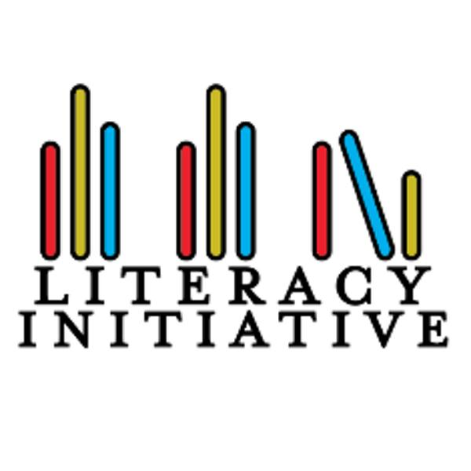

William Dela Cruz
I am currently a third year student attending the University of California, Riverside. I am majoring in biology. I currently have a 3.91 GPA and aiming towards a future in the medical field. I am affiliated with a professional fraternity, Phi Delta Epsilon. Not only that but I am also active in multiple clubs where a work with kids and help out the homeless. The Overflow initiative is an organization that prepares sandwiches and other hygienic items that are to be given to homeless people that could not enter a shelter. The other club that I am in is called The Literacy Initiative. The Literacy Initiative is an organization that’s members go around to local elementary schools and read to younger children. The goal of this organization is to personally work with kids to better their reading skills.
Besides school, I do have multiple hobbies, including the sport that I love to play, Basketball. I actively and currently play basketball and have played in the past for my high school basketball team. I played all four years of highschool and also participated in club basketball. That being said I have also coached younger kids in the past. Basketball has always been a passion of mine and I always look to pass on what I have learned to others. I believe would make me a good coach is that I am very experienced. Not only have I continued to play the game and analyze the sport by watching basketball games but I have had experience working with kids. I believe what makes a good coach is that when working with kids you have to be patient but also kind. You must be able to understand that they are just kids and that it is like a blank canvas that takes time to draw out their potential.
I continue to work with my community and I believe that is why I also want to coach in this region so I can help younger kids develop their talents. I have had leadership positions including managing an organization. I was also involved in my high school's Associated Student Body. I was the spirit commissioner which meant that I hosted and planned the assemblies our school made. I believe that leadership is important when coaching a team or rather kids. Being able to communicate properly with the children is important and leadership is definitely and undeniably key to being a proper coach. Overall, I am a qualified candidate and have shown extreme passion the game of basketball. It is with this passion that I want to pass own and help continue the game of basketball to grow and evolve. This all comes from the younger generations that will soon grow up and be the next generation of players. I hope to work with young passionate kids that love the game of basketball as I can relate to their young dreams. You do not have to be a professional basketball player to love the sport because while it is competitive, the main goal is always to have fun, in whatever you do.
Experience
Coach
• Coached third grade students in my local community
• focused on basic dribbiling skills and shooting form
• Had coached a team to play against others
Cashier
• I was responsible for restocking all products
• I also worked as a cashier and constantly communitcated with customers
Teaching Assistant
• Worked with kids from first to third grade
• Helped students sharpen their reading skills
• Would sometimes work on other subjects such as math
• Worked personally with elementary students
Education
UC Riverside
Portfolio


